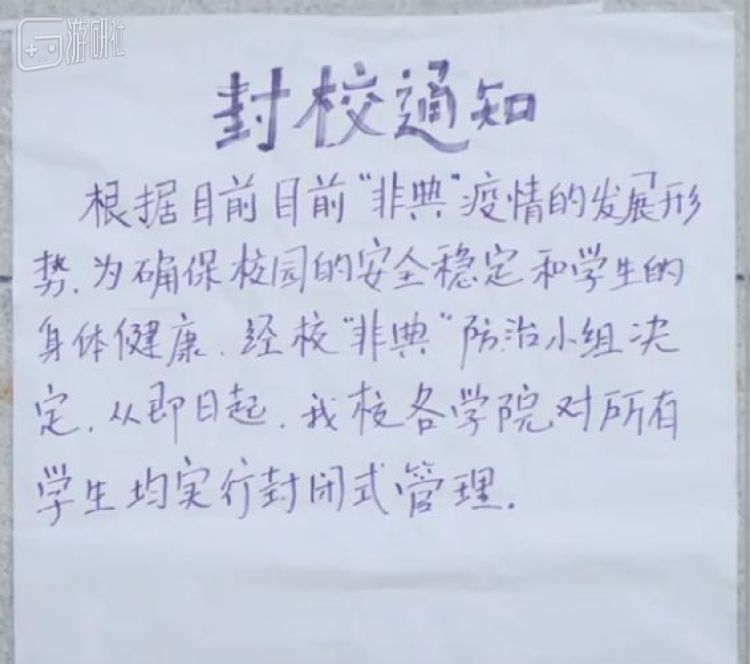
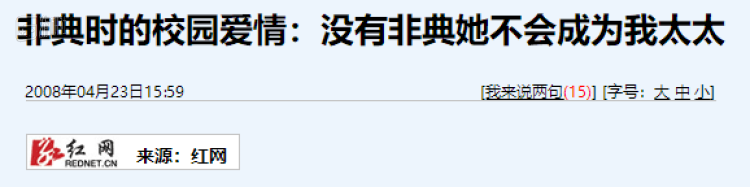
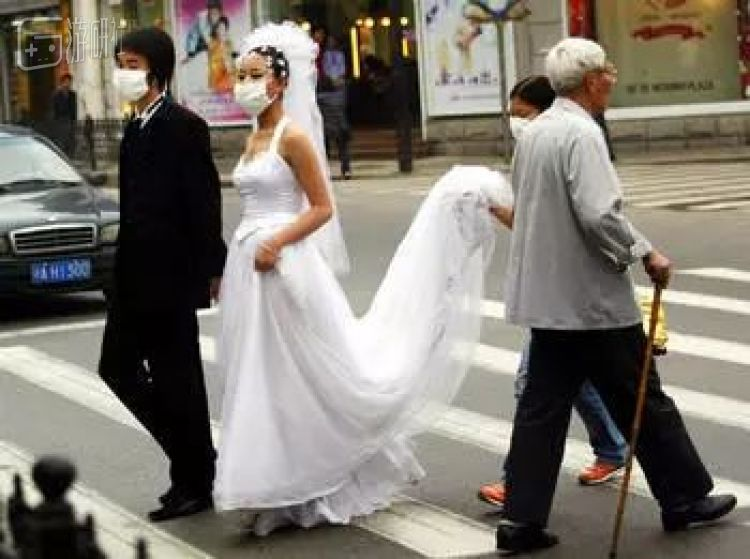

分手时，他带走了我所有的口罩
原文链接 备份链接 这一周，有超过500位读者同我们分享了自己关于爱的故事。今天，我们选取了其中的一些故事，以配合这个名为「情人」的节日——今时今日，这一天似乎看起来不合时宜，但正是因为今时今日，我们才该庆幸，还好，我们还有爱情。 策 …
2003年非典期间，汪涵在一档综艺节目中向搭档马可抛出了一个问题：“在两个人两情相悦的时候，如果情急之时会发生什么状况呢？”
还没等马可回答，汪涵就从手中亮出了一张照片，一对年轻情侣隔着口罩相拥亲吻。汪涵用俏皮的湖南方言说道：“戴了口罩都忍不住。”
马可打断汪涵：“一个口罩有16层，两个口罩是32层，隔着32层怎么亲热？”
汪涵当场开车：“我跟你讲，当两个人有感觉的时候，都是半个小时了，那口水都透过去了，这对人猛啦。”
玩笑归玩笑，汪涵在最后还是用了一段七字口诀，向电视前的情侣们宣传了特殊时期的正确恋爱方式：青山绿水多可爱，漂亮女子人人爱，为了祖国下一代，戴上口罩谈恋爱。
“倾城之恋”
在历史长河的任何阶段，爱情都是人类所向往的一种情感，而在一些特定时期，这种情感就更加显得弥足珍贵。
非典期间，很多大学采取了封闭式管理，里面的人出不去，外面的人进不来。伴随着消毒水的气味，恐慌情绪也弥漫在人群中。病毒肆虐的日子里，校园爱情给很多人的心中带来了温暖的感觉。

当时清华的门户网站开展了“喜欢清华的N个理由”征集活动，很多学生提起喜欢清华的理由时，都表示在那里找到了一份美丽的爱情。当学校封闭实行分餐制时，不同宿舍楼的学生分配到了不同食堂就餐，但校园情侣没有被食堂拆散，他们用饭盒把饭菜从食堂端出，两两一对出现在操场看台，宿舍门口，小树林的长凳。
每天定时集中对宿舍消毒，让喜欢宅在宿舍的学生走出了宿舍。在令人提心吊胆的日子里，大家三五成群的坐在一起，开始互相了解，甚至成为恋人，有人将这浪漫的称为“倾城之恋”
非典爆发五年后，红网采访了一位大学教授的爱情故事，这位教授说“没有非典她不会成为我太太”。

非典爆发时，教授与他太太还都是学生。此前女方曾明确的拒绝过他，但非典疫情改变了这一切。当时她经常向他倾诉自己的紧张与害怕，而他则拿出一副很爷们的样子为她壮胆，托朋友从校外捎来好吃、好玩的给她解闷，炎热的夏天给她送去亚麻凉席。
有同学因食物中毒被急救车拉走，他太太当时并不知道具体情况，发短信说自己十分紧张，这位教授回了一则至关重要的短信：“要是你隔离了，我陪你去。”
2003年4月23日，北京街头一对情侣
除了同校之间的爱情，封闭管理下，还有很多不在同一所学校的情侣。他们隔着冰冷的铁栅栏相拥，以此表达爱意和鼓励。
破损的爱
压抑紧张的气氛下，并非所有爱情都是美好的。这些年有不少影视剧都将非典这段往事穿插其中，其中不乏青春题材的校园故事。
2014年热播的《匆匆那年》描述了一段校园爱情故事。故事的结尾或许有些狗血，男主陈寻出轨，女主方茴用自己身体报复与别人上床，最终堕胎。非典此时已经爆发，街上的行人都戴上了口罩，而方茴也在非典疫情期间故意避开陈寻，从此消失。
很多原著读者和观众都不太能接受这个结局，觉得方茴为何要如此作践自己。但也有不同的看法，当时贴吧上有人发问，“骂方茴不理解方茴的孩子，你们大学里经历过非典吗？”
楼主在帖子中讲述了自己在非典时的校园见闻。他的一个好哥们上大学谈了一年多恋爱，结果在非典期间女生变心，与另外一个系的男生好上。
后来他的哥们去女生宿舍找她，希望女友能够回心转意，结果却被挖墙脚的男生叫人打了一顿。
“我们系男生知道后，差点和那男的系发生几百人对几百人的群殴，是老师给压下来了。非典时正好大二，真的觉得世界末日似的。好多人表白了，许多分分合合。”

虚假的爱
特殊时期会产生出大量贴合事件的报道，但其中总会伴随着一些人为制造的假新闻。
2003年5月7日，一张非典期间的爱情题材照片登上了报纸头版，画面中一对情侣穿着婚纱，戴着口罩，穿过马路去拍照。

这张照片名叫《非典时期的爱情》，作者是邱焰，他曾获得过中国德艺双馨摄影记者称号，后来这张照片经过国内评审送到了荷赛奖参赛。
荷赛奖被认为是国际专业新闻摄影比赛中最具权威的赛事，邱焰的《非典时期的爱情》在2004年第47届荷赛奖被评为了日常生活新闻类三等奖。
获奖消息传到国内后，邱焰却因此惹上了麻烦。
照片中的“新郎”陈英真实身份是男模，他称《非典时期的爱情》的人物和场景全都是人为制造出来的，摄影记者邱焰为了拍摄“非典”时期为背景的爱情题材照片，在一家婚纱店选中了陈英和另一位女模特帮忙。
陈英为了提高自己知名度，愿意接受拍摄，要求照片以模特身份登报，并且不作结婚新人报道，但最终登报时邱焰未能履约。一年后，获奖的消息传来，陈英将邱焰告上了法庭。法庭上，他称照片是由邱焰亲自导演、一手策划，自己因这张严重失实的新闻照片导致他与女友关系破裂。
但另一方面，陈英时隔一年、照片获奖才起诉，有人怀疑他是为了搏出位，模特和演艺圈为出位不惜炒作自己的例子当时也并不少见。而且起诉前不久，陈英还曾向邱焰索要10万元了结此事，但最终被邱焰以遭到敲诈为由向警方报警。
首次开庭后，邱焰面对媒体采访时，还一口咬定这张获奖照片并非摆拍。但随着4个月时间里的3次开庭，《非典时期的爱情》最终被判失实。
法院在判决书中称：“图片新闻应当遵循新闻真实性原则，本案照片经原告同意，由第一被告邱焰拍摄并配发文字说明，次日，《武汉晚报》作为图片新闻予以发表，该文字说明没有直接反映‘街道口罩秀’营销活动，而是对照片反映事实的拔高处理。”
陈英觉得这场审判总体是公正的，但对于“街道口罩秀”的说法有些不满，“根本不存在什么口罩秀的活动”。
这场官司让陈英拿到了三万元的精神赔偿，但他当时在电话里接受《今日早报》采访时并没有很高兴：“赔得太少。对于邱焰曾说我敲诈，我和律师商议后准备另打官司讨回名誉，他这样做对我做生意的家人造成恶劣影响。”
热恋、分手、造假的爱情转眼过去了17年，曾经非典时期的爱情故事，变成了如今新冠时期的情人节。
今年的情人节如刚过去的春节一样冷清，商场和街头不再灯火通明。线上零售的热搜商品由往年的鲜花、巧克力，变成了口罩和酒精。这次学生没有被困在学校，但却困在了家里，异地恋通过手机屏幕开始了漫长的云恋爱，等这场疫情结束，可能又将是另一种独特的爱情故事。
原文链接 备份链接 这一周，有超过500位读者同我们分享了自己关于爱的故事。今天，我们选取了其中的一些故事，以配合这个名为「情人」的节日——今时今日，这一天似乎看起来不合时宜，但正是因为今时今日，我们才该庆幸，还好，我们还有爱情。 策 …
原文链接 备份链接 十七年前的非典，我作为疫区之一的广东人，在疫区之二的北京上大学。当时，我在同系师兄的呼吁下，写了一个月的非典日记。 我和先生、五岁的儿子现在住在美国南部，先生一家是武汉人，我每次回国都会去武汉，去年夏天，我家小朋友在武 …
原文链接 备份链接 在武汉乃至全国，百步亭社区都是标杆式的存在。社区位于湖北武汉的江岸区，由 11 个小区组成，常住人口 13 万。 百步亭分为安居苑、百合苑、现代城、景兰苑、悦秀苑、幸福时代等 11 个小区。 图片来源： …
原文链接 备份链接 凤凰新闻客户端 凤凰网在人间工作室出品 我家在湖北襄阳，妈妈是襄阳中心医院的医生。疫情发生以来，截至2月17日，襄阳新冠肺炎确诊病例累计1155例，在湖北省排名第七位。 我住在美国华盛顿。 1月21号，我给妈妈打电 …
原文链接 备份链接 沈杰把为医务人员理发的短视频上传到社交网络，获得了两种意料之外的回应：一种说他“胆子大”，“这种时候还敢到医院去”，另外一种，则是更多医务人员请他帮忙。 对他而言，自己只是偶然接到了一个医生的电话，了解对方困境后没犹 …